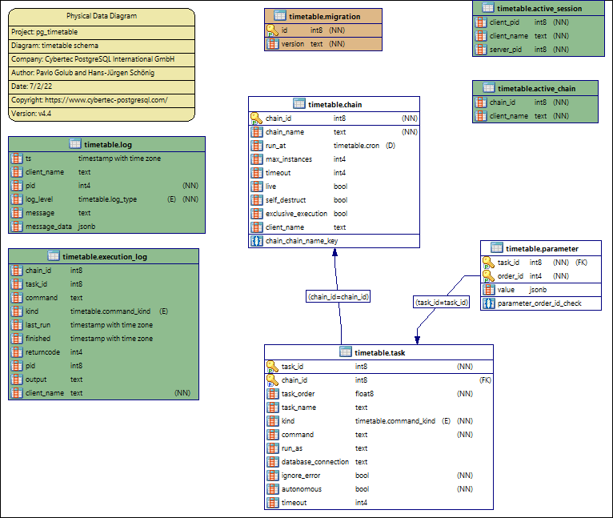

Database Schema
pg_timetable is a database driven application. During the first start the necessary schema is created if absent.
Main tables and objects
CREATE TABLE timetable.chain (
chain_id BIGSERIAL PRIMARY KEY,
chain_name TEXT NOT NULL UNIQUE,
run_at timetable.cron,
max_instances INTEGER,
timeout INTEGER DEFAULT 0,
live BOOLEAN DEFAULT FALSE,
self_destruct BOOLEAN DEFAULT FALSE,
exclusive_execution BOOLEAN DEFAULT FALSE,
client_name TEXT,
on_error TEXT
);
COMMENT ON TABLE timetable.chain IS
'Stores information about chains schedule';
COMMENT ON COLUMN timetable.chain.run_at IS
'Extended CRON-style time notation the chain has to be run at';
COMMENT ON COLUMN timetable.chain.max_instances IS
'Number of instances (clients) this chain can run in parallel';
COMMENT ON COLUMN timetable.chain.timeout IS
'Abort any chain that takes more than the specified number of milliseconds';
COMMENT ON COLUMN timetable.chain.live IS
'Indication that the chain is ready to run, set to FALSE to pause execution';
COMMENT ON COLUMN timetable.chain.self_destruct IS
'Indication that this chain will delete itself after successful run';
COMMENT ON COLUMN timetable.chain.exclusive_execution IS
'All parallel chains should be paused while executing this chain';
COMMENT ON COLUMN timetable.chain.client_name IS
'Only client with this name is allowed to run this chain, set to NULL to allow any client';
CREATE TYPE timetable.command_kind AS ENUM ('SQL', 'PROGRAM', 'BUILTIN');
CREATE TABLE timetable.task (
task_id BIGSERIAL PRIMARY KEY,
chain_id BIGINT REFERENCES timetable.chain(chain_id) ON UPDATE CASCADE ON DELETE CASCADE,
task_order DOUBLE PRECISION NOT NULL,
task_name TEXT,
kind timetable.command_kind NOT NULL DEFAULT 'SQL',
command TEXT NOT NULL,
run_as TEXT,
database_connection TEXT,
ignore_error BOOLEAN NOT NULL DEFAULT FALSE,
autonomous BOOLEAN NOT NULL DEFAULT FALSE,
timeout INTEGER DEFAULT 0
);
COMMENT ON TABLE timetable.task IS
'Holds information about chain elements aka tasks';
COMMENT ON COLUMN timetable.task.chain_id IS
'Link to the chain, if NULL task considered to be disabled';
COMMENT ON COLUMN timetable.task.task_order IS
'Indicates the order of task within a chain';
COMMENT ON COLUMN timetable.task.run_as IS
'Role name to run task as. Uses SET ROLE for SQL commands';
COMMENT ON COLUMN timetable.task.ignore_error IS
'Indicates whether a next task in a chain can be executed regardless of the success of the current one';
COMMENT ON COLUMN timetable.task.kind IS
'Indicates whether "command" is SQL, built-in function or an external program';
COMMENT ON COLUMN timetable.task.command IS
'Contains either an SQL command, or command string to be executed';
COMMENT ON COLUMN timetable.task.timeout IS
'Abort any task within a chain that takes more than the specified number of milliseconds';
COMMENT ON COLUMN timetable.task.autonomous IS
'Specify if the task should be executed out of the chain transaction. Useful for VACUUM, CREATE DATABASE, CALL etc.';
-- parameter passing for a chain task
CREATE TABLE timetable.parameter(
task_id BIGINT REFERENCES timetable.task(task_id)
ON UPDATE CASCADE ON DELETE CASCADE,
order_id INTEGER CHECK (order_id > 0),
value JSONB,
PRIMARY KEY (task_id, order_id)
);
COMMENT ON TABLE timetable.parameter IS
'Stores parameters passed as arguments to a chain task';
CREATE UNLOGGED TABLE timetable.active_session(
client_pid BIGINT NOT NULL,
server_pid BIGINT NOT NULL,
client_name TEXT NOT NULL,
started_at TIMESTAMPTZ DEFAULT now()
);
COMMENT ON TABLE timetable.active_session IS
'Stores information about active sessions';
CREATE TYPE timetable.log_type AS ENUM ('DEBUG', 'NOTICE', 'INFO', 'ERROR', 'PANIC', 'USER');
CREATE OR REPLACE FUNCTION timetable.get_client_name(integer) RETURNS TEXT AS
$$
SELECT client_name FROM timetable.active_session WHERE server_pid = $1 LIMIT 1
$$
LANGUAGE sql;
CREATE TABLE timetable.log
(
ts TIMESTAMPTZ DEFAULT now(),
pid INTEGER NOT NULL,
log_level timetable.log_type NOT NULL,
client_name TEXT DEFAULT timetable.get_client_name(pg_backend_pid()),
message TEXT,
message_data jsonb
);
COMMENT ON TABLE timetable.log IS
'Stores log entries of active sessions';
CREATE TABLE timetable.execution_log (
chain_id BIGINT,
task_id BIGINT,
txid BIGINT NOT NULL,
last_run TIMESTAMPTZ DEFAULT now(),
finished TIMESTAMPTZ,
pid BIGINT,
returncode INTEGER,
ignore_error BOOLEAN,
kind timetable.command_kind,
command TEXT,
output TEXT,
client_name TEXT NOT NULL
);
COMMENT ON TABLE timetable.execution_log IS
'Stores log entries of executed tasks and chains';
CREATE UNLOGGED TABLE timetable.active_chain(
chain_id BIGINT NOT NULL,
client_name TEXT NOT NULL,
started_at TIMESTAMPTZ DEFAULT now()
);
COMMENT ON TABLE timetable.active_chain IS
'Stores information about active chains within session';
CREATE OR REPLACE FUNCTION timetable.try_lock_client_name(worker_pid BIGINT, worker_name TEXT)
RETURNS bool AS
$CODE$
BEGIN
IF pg_is_in_recovery() THEN
RAISE NOTICE 'Cannot obtain lock on a replica. Please, use the primary node';
RETURN FALSE;
END IF;
-- remove disconnected sessions
DELETE
FROM timetable.active_session
WHERE server_pid NOT IN (
SELECT pid
FROM pg_catalog.pg_stat_activity
WHERE application_name = 'pg_timetable'
);
DELETE
FROM timetable.active_chain
WHERE client_name NOT IN (
SELECT client_name FROM timetable.active_session
);
-- check if there any active sessions with the client name but different client pid
PERFORM 1
FROM timetable.active_session s
WHERE
s.client_pid <> worker_pid
AND s.client_name = worker_name
LIMIT 1;
IF FOUND THEN
RAISE NOTICE 'Another client is already connected to server with name: %', worker_name;
RETURN FALSE;
END IF;
-- insert current session information
INSERT INTO timetable.active_session(client_pid, client_name, server_pid) VALUES (worker_pid, worker_name, pg_backend_pid());
RETURN TRUE;
END;
$CODE$
STRICT
LANGUAGE plpgsql;
Jobs related functions
-- add_task() will add a task to the same chain as the task with `parent_id`
CREATE OR REPLACE FUNCTION timetable.add_task(
IN kind timetable.command_kind,
IN command TEXT,
IN parent_id BIGINT,
IN order_delta DOUBLE PRECISION DEFAULT 10
) RETURNS BIGINT AS $$
INSERT INTO timetable.task (chain_id, task_order, kind, command)
SELECT chain_id, task_order + $4, $1, $2 FROM timetable.task WHERE task_id = $3
RETURNING task_id
$$ LANGUAGE SQL;
COMMENT ON FUNCTION timetable.add_task IS 'Add a task to the same chain as the task with parent_id';
-- add_job() will add one-task chain to the system
CREATE OR REPLACE FUNCTION timetable.add_job(
job_name TEXT,
job_schedule timetable.cron,
job_command TEXT,
job_parameters JSONB DEFAULT NULL,
job_kind timetable.command_kind DEFAULT 'SQL'::timetable.command_kind,
job_client_name TEXT DEFAULT NULL,
job_max_instances INTEGER DEFAULT NULL,
job_live BOOLEAN DEFAULT TRUE,
job_self_destruct BOOLEAN DEFAULT FALSE,
job_ignore_errors BOOLEAN DEFAULT TRUE,
job_exclusive BOOLEAN DEFAULT FALSE,
job_on_error TEXT DEFAULT NULL
) RETURNS BIGINT AS $$
WITH
cte_chain (v_chain_id) AS (
INSERT INTO timetable.chain (chain_name, run_at, max_instances, live, self_destruct, client_name, exclusive_execution, on_error)
VALUES (job_name, job_schedule,job_max_instances, job_live, job_self_destruct, job_client_name, job_exclusive, job_on_error)
RETURNING chain_id
),
cte_task(v_task_id) AS (
INSERT INTO timetable.task (chain_id, task_order, kind, command, ignore_error, autonomous)
SELECT v_chain_id, 10, job_kind, job_command, job_ignore_errors, TRUE
FROM cte_chain
RETURNING task_id
),
cte_param AS (
INSERT INTO timetable.parameter (task_id, order_id, value)
SELECT v_task_id, 1, job_parameters FROM cte_task, cte_chain
)
SELECT v_chain_id FROM cte_chain
$$ LANGUAGE SQL;
COMMENT ON FUNCTION timetable.add_job IS 'Add one-task chain (aka job) to the system';
-- notify_chain_start() will send notification to the worker to start the chain
CREATE OR REPLACE FUNCTION timetable.notify_chain_start(
chain_id BIGINT,
worker_name TEXT,
start_delay INTERVAL DEFAULT NULL
) RETURNS void AS $$
SELECT pg_notify(
worker_name,
format('{"ConfigID": %s, "Command": "START", "Ts": %s, "Delay": %s}',
chain_id,
EXTRACT(epoch FROM clock_timestamp())::bigint,
COALESCE(EXTRACT(epoch FROM start_delay)::bigint, 0)
)
)
$$ LANGUAGE SQL;
COMMENT ON FUNCTION timetable.notify_chain_start IS 'Send notification to the worker to start the chain';
-- notify_chain_stop() will send notification to the worker to stop the chain
CREATE OR REPLACE FUNCTION timetable.notify_chain_stop(
chain_id BIGINT,
worker_name TEXT
) RETURNS void AS $$
SELECT pg_notify(
worker_name,
format('{"ConfigID": %s, "Command": "STOP", "Ts": %s}',
chain_id,
EXTRACT(epoch FROM clock_timestamp())::bigint)
)
$$ LANGUAGE SQL;
COMMENT ON FUNCTION timetable.notify_chain_stop IS 'Send notification to the worker to stop the chain';
-- move_task_up() will switch the order of the task execution with a previous task within the chain
CREATE OR REPLACE FUNCTION timetable.move_task_up(IN task_id BIGINT) RETURNS boolean AS $$
WITH current_task (ct_chain_id, ct_id, ct_order) AS (
SELECT chain_id, task_id, task_order FROM timetable.task WHERE task_id = $1
),
tasks(t_id, t_new_order) AS (
SELECT task_id, COALESCE(LAG(task_order) OVER w, LEAD(task_order) OVER w)
FROM timetable.task t, current_task ct
WHERE chain_id = ct_chain_id AND (task_order < ct_order OR task_id = ct_id)
WINDOW w AS (PARTITION BY chain_id ORDER BY ABS(task_order - ct_order))
LIMIT 2
),
upd AS (
UPDATE timetable.task t SET task_order = t_new_order
FROM tasks WHERE tasks.t_id = t.task_id AND tasks.t_new_order IS NOT NULL
RETURNING true
)
SELECT COUNT(*) > 0 FROM upd
$$ LANGUAGE SQL;
COMMENT ON FUNCTION timetable.move_task_up IS 'Switch the order of the task execution with a previous task within the chain';
-- move_task_down() will switch the order of the task execution with a following task within the chain
CREATE OR REPLACE FUNCTION timetable.move_task_down(IN task_id BIGINT) RETURNS boolean AS $$
WITH current_task (ct_chain_id, ct_id, ct_order) AS (
SELECT chain_id, task_id, task_order FROM timetable.task WHERE task_id = $1
),
tasks(t_id, t_new_order) AS (
SELECT task_id, COALESCE(LAG(task_order) OVER w, LEAD(task_order) OVER w)
FROM timetable.task t, current_task ct
WHERE chain_id = ct_chain_id AND (task_order > ct_order OR task_id = ct_id)
WINDOW w AS (PARTITION BY chain_id ORDER BY ABS(task_order - ct_order))
LIMIT 2
),
upd AS (
UPDATE timetable.task t SET task_order = t_new_order
FROM tasks WHERE tasks.t_id = t.task_id AND tasks.t_new_order IS NOT NULL
RETURNING true
)
SELECT COUNT(*) > 0 FROM upd
$$ LANGUAGE SQL;
COMMENT ON FUNCTION timetable.move_task_down IS 'Switch the order of the task execution with a following task within the chain';
-- delete_job() will delete the chain and its tasks from the system
CREATE OR REPLACE FUNCTION timetable.delete_job(IN job_name TEXT) RETURNS boolean AS $$
WITH del_chain AS (DELETE FROM timetable.chain WHERE chain.chain_name = $1 RETURNING chain_id)
SELECT EXISTS(SELECT 1 FROM del_chain)
$$ LANGUAGE SQL;
COMMENT ON FUNCTION timetable.delete_job IS 'Delete the chain and its tasks from the system';
-- delete_task() will delete the task from a chain
CREATE OR REPLACE FUNCTION timetable.delete_task(IN task_id BIGINT) RETURNS boolean AS $$
WITH del_task AS (DELETE FROM timetable.task WHERE task_id = $1 RETURNING task_id)
SELECT EXISTS(SELECT 1 FROM del_task)
$$ LANGUAGE SQL;
COMMENT ON FUNCTION timetable.delete_task IS 'Delete the task from a chain';
Сron related functions
ER-Diagram

ER-Diagram showing the database structure